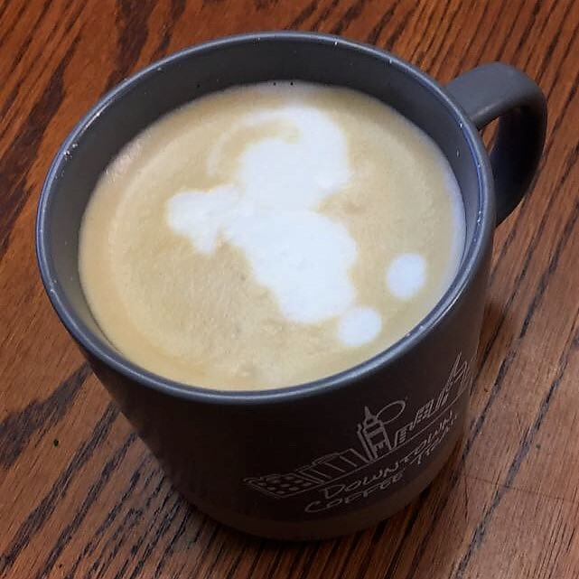

aeropress
cafe tres generaciones
costa rica peaberry, medium
20g coffee, 200g water
1+2 on lido e-t
water at 195 deg f
inverted method
45g bloom for 30s
at 30s, pour to 200g
rinse filter and preheat mug while steeping
invert into mug and plunge
froth 200g milk in french press and pour over aeropress shot
overall impressions: frothed milk consistency came out really nice
drink was alright, tasted a little off - maybe add less milk/fine-tune aeropress shot
seven and three-quarter stars out of ten
